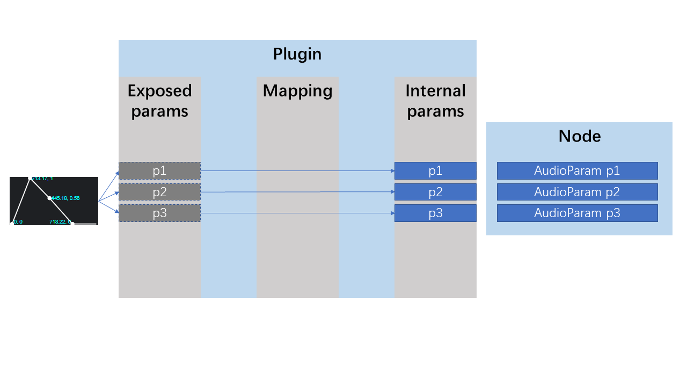
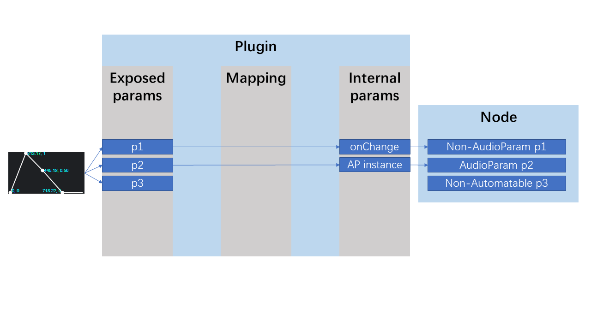
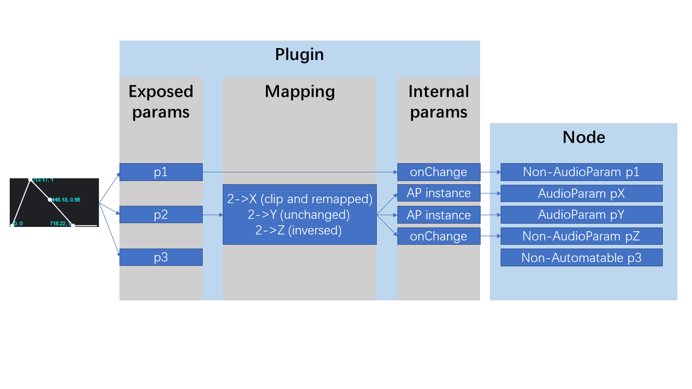

This document provides a description of the Parameter Manager used for the WebAudioModule SDK, and a guide to handle parameters in an WebAudioModule with the Parameter Manager.
It is conventional for audio plugin users and hosts to schedule plugin parameter changes with an automation timeline. The WebAudio API provides the AudioParam interface, with its AtTime methods, to allow developers to schedule sample-accurate a-rate or buffer-accurate k-rate automations in several ways.
It is important for an WebAudioModule to control its parameters sample-accurately. However, the AudioParams exist only inside AudioNodes, they are not constructable independently, and they do not exist in the audio thread. This is reason that WebAudioModule API provides another interface WamParameter for automatable parameters both in the main thread and in the audio thread. The Parameter Manager provides an implementation of the WamParameter that uses native but customized AudioParam to handle automation scheduling. In fact, Parameter Manager is mainly an AudioWorkletNode that creates user defined AudioParams, then transform them to AudioNode outputs or funcion calls.
As described in the WebAudioModule API, the developer should declare and configure every parameters as WamParameterInfo that are controllable and automatable by the host application, and let them accessible via WamNode's methods, such as getParameterInfo(). In the Parameter Manager, we consider these parameters are the WAM's exposed parameters. (see ParametersMappingConfiguratorOptions.paramsConfig).
In a host, by automating or controlling these exposed parameters, it will then change the WAM's internal state. The variables to be changed as the internal state, which we call internal parameters, can be an AudioParam or an event handler that will be called while the values change, under a certain fire rate. (see InternalParametersDescriptor)
In some use cases, the plugin needs to control multiple internal parameters with one single exposed parameter, and with different value scalings or mappings. For example, an exposed parameter mix need to be clipped from 0 to 0.5 and be mapped to 0 and 1 for an internal parameter dry; at the same time, it need to be clipped from 0.5 to 1 and be mapped to 1 and 0 for an internal parameter wet. This can be done easily by declaring a paramsMapping. (see ParametersMapping)
By using the ParamMgrFactory.create static method, the developer will create an instance of the Parameter Manager that will automatically handle the parameters. It depends on the configuration provided with the paramsConfig, internalParamsConfig and paramsMapping properties of the optionsIn argument. There are three main design patterns to declare and link the exposed parameters to the internal parameters using the Parameter Manager.
AudioParam, no need to declare the paramsConfig and the paramsMapping, declare only the internalParamsConfig.
If the developer leaves the
paramsConfigand theparamsMappingundefined, the SDK will derive theparamsConfigfrom theinternalParamsConfig, which means they are containing the same parameter names and values. TheparamsMappingwill be filled with peer to peer mappings with no value mapping.
For example:
// if audioNode.gain and audioNode.freq are AudioParams
const internalParamsConfig = {
gain: audioNode.gain,
freq: audioNode.freq
};
const paramMgr = await ParamMgrFactory.create(wam, { internalParamsConfig });
AudioParams, no need to declare the paramsConfig and the paramsMapping, declare only the internalParamsConfig.
If the developer declared the
internalParamsConfigand leaves theparamsMappingunset, the SDK will automatically make links between the exposed parameters and the internal parameters, taking account of the givingAudioParam, or theonChangecallback with theautomationRate.
The
paramsMappingwill be filled with peer to peer mappings with no value mapping.
For example:
const internalParamsConfig = {
enabled: {
onChange: (value, prevValue) => {
console.log(`Param "enabled" has been changed from ${prevValue} to ${value}`);
}, // callback
automationRate: 10 // 10 times/sec
},
gain: audioNode.gain // AudioParam
};
const paramMgr = await ParamMgrFactory.create(wam, { internalParamsConfig });
AudioParams pattern, need to declare the paramsConfig, internalParamsConfig and the paramsMapping
This pattern is useful when a different mapping is needed between the internal parameters and the exposed parameters.
A value mapping can be set via
sourceRangeandtargetRangefields. The incoming value of the exposed parameter will be firstly clipped usingsourceRange, then the value in thesourceRangewill be remapped to thetargetRange. If these fields remainundefined, they will be the same as theminValueand themaxValueof the exposed parameter.
If one parameter name appears in both
paramsConfigandinternalParamsConfig, the mapping will be created automatically if it is not declared explicitly in theparamsMapping.
Dynamically changing the
paramsMappingis possible using thesetParamsMappingmethod.
For example:
const paramsConfig = {
mix: {
defaultValue: 0.5,
minValue: 0,
maxValue: 1
}
}
const internalParamsConfig = {
dryGain: dryGainNode.gain,
wetGain: wetGainNode.gain,
};
const paramsMapping = {
mix: {
dryGain: {
sourceRange: [0.5, 1],
targetRange: [1, 0],
},
wetGain: {
sourceRange: [0, 0.5],
targetRange: [0, 1],
},
},
};
const option = {
paramsConfig,
internalParamsConfig,
paramsMapping
};
const paramMgr = await ParamMgrFactory.create(wam, option);
AudioNode using the Parameter ManagerWebAudioModule API requires that the module's audioNode is connectable as audio I/O, and implements the WamNode interface. As a developer, one can use the Parameter Manager to act as the WamNode interface, and use another AudioNode to act as the audio I/O by creating a CompositeAudioNode. We provide a prototype of the CompositeAudioNode in the Parameter Manager folder.
To get it work with the Parameter Manager, see this example:
import { WebAudioModule } from '@webaudiomodules/sdk';
import { ParamMgrFactory, CompositeAudioNode } from '@webaudiomodules/sdk-parammgr';
class MyCompositeAudioNode extends CompositeAudioNode {
setup(output, paramMgr) {
this.connect(output, 0, 0);
this._wamNode = paramMgr;
this._output = output;
}
}
export default class MyWam extends WebAudioModule {
//... other settings
async createAudioNode(initialState) {
const gainNode = new GainNode(this.audioContext);
const compositeNode = new MyCompositeAudioNode(this.audioContext);
const internalParamsConfig = {
gain: gainNode.gain
};
const paramMgrNode = await ParamMgrFactory.create(this, { internalParamsConfig });
compositeNode.setup(gainNode, paramMgrNode);
if (initialState) compositeNode.setState(initialState);
return compositeNode;
}
}
Generated using TypeDoc